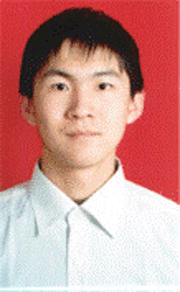

在奉献和追求中享受人生
回首15年的求学生涯，我欣喜地感到自己在一步步成长，在丰富、充实的学习生活中我一直怀揣着两个信念：一是扎根集体，在为同学服务的过程中增长才干；二是刻苦勤奋，一步一个脚印地攀登人生的阶梯。下面，我就将自己在奉献和追求中享受人生的故事讲给大家。
我来自长白山脚下的边陲小城吉林省白山市，那里有一望无际的林海和绵延三百里的煤海。大山赋予了我淳朴自然的性格，矿工们白手起家、携手创业的奋斗史使我目睹了集体的力量是如何征服自然，在白山黑水间创造人间奇迹的。
我小的时候，身为第一代矿山人的祖父母用他们的善良和淳朴教育我要做一个品德高尚的孩子，具有多年团干经历的父母言传身教，向我讲述先辈们通过刻苦学习为国家和人民做贡献的感人事迹。周总理“为中华之崛起而读书”的故事,“书山有路勤为径，学海无涯苦作舟”的名言在我的心里打下了深深的烙
印。小的时候，妈妈就告诉我做什么事情都要认认真真。我始终记着妈妈的话，从小学到初中，在学习上我始终不敢有侥幸心理，每个知识点都要弄明白，并且时刻提醒自己要戒骄戒躁，孜孜以求。老师交给我的大小工作，我都会一丝不苟、尽心竭力地完成。就这样一步一个脚印，我的学习成绩始终名列前茅，老师和同学们也一直推选我做班长。初中班主任用自己的行动给我巨大的影响，她教我用真诚和热情去关心集体和每位同学，正是从那时起我喜欢上了教师这个职业。有一件小事让我至今记忆犹新。初二的冬天，一次上课期间我替语文老师到办公室取卷子，只穿一件薄毛衣的我在路过隔壁班时，被正在讲课的班主任看到，她立刻叫住了我，告诉我回去穿棉衣，还严肃地说下次再发现我不穿大衣出去就不给我假。短短的几句话如冬日的暖阳，使我在寒风中感到无限的温暖。我想，作为班长，我也应该像她一样去关心同学们的学习和生活。虽然我的学习成绩在年级始终名列前茅，然而这个成绩只能说明自己是名优秀的学生，但我是学生干部，我有责任让全班同学都取得优秀的学习成绩。于是，我便主动帮助成绩不太好的同学。每到周六、周日，常有同学到我家来学习和讨论问题，从初一到初三不曾间断。初二时，当我接过全校唯一一个“白山市三好学生”证书时，我感动在老师和同学们的掌声里，我看到了无限的关怀与期望，我在心里默默告诉自己：“这荣誉不仅属于我，更属于他们！”
“兴趣是最好的老师”，高中的生活使我真正体会到了这句话的涵义。中考过后，我如愿地走进了心爱的文科课堂。无论是中文的华美还是英文的缜密，无论是哲学的深邃还是史学的隽永，我都那么真切的喜欢，我欣喜得吮吸着知识带给我的每一滴甘露，学习成绩也稳定地保持在年级前两名。同时，三年里我担任班长兼校学生会学习部部长，这段经历为我提供了很多锻炼和提高的机会。从各项班级制度的制定到具体活动的开展，老师都委托我处理。我深爱着这个集体，早晨去查看一下卫生，自习课时维持一下纪律，课后找学习成绩一般的同学谈谈心，天阴下雨回班看看窗户关了没有，同学有经济困难时申请学校扶一把，发动大家帮一把……这一件件的事情虽说很小，但我却因为能够为同学尽了自己的一份心意而高兴，我的心里又多了一个温暖的家。同学们也积极地配合我的工作，当有工作失误时，我从他们的眼神中看到的是支持和鼓励而不是挑剔和抱怨，大家心往一块想，劲儿往一块使，班级的凝聚力越来越强，因此，每学期我们班都被评为“先进班级体”，我也再次被评为了全年级唯一的一个“白山市三好学生”。在校学生会中，我主要负责组建广播站和创建校报。俗话说：“万事开头难。”我既要播音又要发掘播音员，既要写稿件又要编报纸。在广播站，从栏目设计到写稿、编稿再到音响调试，都由同学独立完成，我在忙碌中快乐着，因为我们的声音会在午后给同学送去知识和欢乐。在校园记者站，从稿件的收集、整理到编辑、印刷也都由我们独立完成，当听到同学们在走廊里谈论着我们的文章时，一种难以言表的成就感涌上心头。可以说，这些实践活动为我在大学的进一步发展奠定了良好的基础。
我真心地爱着集体，同样集体里的每一位同学也都和我亲如兄弟姐妹，我时刻都会感觉到在我的背后有无数双手默默支撑着我前行，所以当我遇到困难时也不会害怕。人们常说：“天有不测风云，人有旦夕祸福”，高考前7天，我正在班里备考复习，祖母前一周猝然撒手人寰的阴影尚未散去，一个不幸的消息又接踵而来：楼下液化气漏气引起爆炸，我家也面目全非，书和复习资料被崩得乱七八糟。面对家里的一片狼籍，我不知所措，但集体的温暖很快又抚平了我的心灵。当天下午，学校主动提出为我在宿舍开个房间并帮我筹集教材，同学们拿来了复习资料和日用品，从演算纸、面巾纸、咸鸭蛋到随身听、英汉词典，满满一桌子。他们告诉我必须坚持，因为我肩负着他们的梦想与希望。我当时在想，面对这样的深情厚意，我非奋发无以为报啊！
2000年9月，光荣与梦想将我带进了东北师大的校门。从踏入校门的那一刻起，我便为自己定下了这四年的发展目标：我要成为一名思想积极进步，学习成绩优异，工作成绩突出，特长发展明显的合格大学生。
开学伊始，我被推选为年级长兼班长并加入院学生会。在班里，尽管按年龄排我算是小弟弟，但作为班长我必需像大哥哥一样去关心每一位同学。大一下学期的一个夜晚，风雨大做，雷电交加，透过寝室的窗户，我发现电线被闪电劈断了，整个校园一片漆黑，大树也被劈倒了好几棵，我的第一反应是：同学们都回寝室了吗？于是，我便借了一台应急灯，给各班班长打电话，让他们确定同学们是否在家或在寝，男同学结伙去接班里上自习的女生，人齐之后告诉我一声。然后，我便和另一名男同学带着伞急匆匆地赶往教室，在半路与从班里往寝室跑的同学胜利会师，并把她们安全护送回寝。当我回到寝室的时候，发现自己已经是个“落汤鸡”了，不过当我从电话中得知全年级的同学都很安全时，我心里悬着的那块石头终于落地了。
渐渐的，我和同学们的关系越走越近，同学们遇到了什么问题都喜欢找我帮忙。大一下学期的一天凌晨，寝室的电话突然响了，一位同学阑尾炎发作，她寝室的同学急得不知所措，我立即说：“派两个人到人民大街拦辆车。”随后，我带上现金和存折叫起同班的另一名男同学赶忙跑到6舍楼下，这时车也到了，我们立即赶往省人民医院。值班大夫为她做了检查并先开了些药，说可以第二天上午做手术。虽说阑尾炎手术是小手术，但她年龄偏小又远离家乡，所以难免有些害怕，我们便一直陪着她。她第二天手术后，我利用护理妈妈手术时积累的一点小经验告诉她先不能进食，而且要多下地活动防止肠子粘连。下午回班后，我号召大家轮流护理她并为她补课，每天放学后我都抽时间去看看她，集体的温暖使她不再想家并很快痊愈。
随着工作经验的积累，到了三年级，老师和同学推荐我为校学生会主席。然而，我无法割舍外语学院对我三年的教育和培养，老师和同学们也十分希望我能继续为院里的同学们做点事，所以，我兼任了外语学院学生会主席和年级长。尽管这三份工作加起来工作量相当大，但我仍然坚信只要态度务实、方法得当，靠着集体的力量，我们就一定能把各项工作开展好。如何才能把学生会的工作开展好？我总结出了三点经验。第一，我们开展的活动要合同学的口味。因此，我上任后所做的第一件事情便是深入到各院系同学中去走访调研，听听他们的声音。我在学生活动比较密集的周三和周五傍晚经常到各院系参加他们的活动，为了不给组织者添麻烦，我便早些去并坐在后面不惹人注意的地方。活动开始前，和周围的同学聊聊他们喜欢什么样的活动；在活动进行中，记下各个步骤；活动结束后通过同学的反应和自己的感觉写下心得，并在走过所有院系后总结出哪些同学愿意参加哪类活动。第二，必须广开言路，调动院系积极性，实现东北师范大学全校学生活动一盘棋的工作构想。于是，我便召集各院主要学生干部共同商谈工作，设计发展规划，因为全校学生活动是一家，要使我们的活动做到实处就必须改变“上传下达”的工作模式，而是大家的事情大家办，大家的经验大家学。我在开会讨论问题的时候有个习惯：把问题先抛出去，请院系的干部先谈，大家可以争论，为的是把工作做到最好，大家谈得差不多了，我再说我的想法。比较一下，哪个好就用哪个，如果我最初想的确实不周，那就推翻，因为工作顾忌的不应该是谁的脸面而应该是同学的利益。但是，一旦大家达成共识，那么就要鼓励各院学生会积极参与，同时，我们制定了科学的奖惩制度对院系学生会的工作进行客观的评估，鼓励先进，树立典型。第三，要加强内部管理，打造工作高效、务实的精英团队，创建温馨、和谐的学生活动之家。我认为，组织要发展，就必须强化纪律意识和提高效率意识。无论是会议还是活动，工作人员必须提前五分钟到场，未经批准绝对不能擅离职守，主要学生干部要率先垂范。同时，成员要互助合作就需要彼此在生活和学习上互相关心互相帮助，亲如一家，家合才能万事兴，其实有的时候主席给辛勤工作的委员倒杯水远比给他讲多少大道理更能激发他的工作潜能。
长期的高强度的工作和学习是对我身体和精力的挑战，尽管我尽可能地把时间调配得比较合理，但冲突是难以避免的。当有的部长见我啃着面包从一个会场跑向另一个会场时，心疼地问我：“你这是为了啥呀？”我心中只有四个字：不辱使命！我深深地知道，老师和同学们对学生会寄予厚望，这是对我们莫大的信任。作为学生会主席，我的脑子里牢牢地印着一句话：“责任重于泰山。”因此，不管自己要克服多少困难，也一定要尽力把工作做好。去年冬天，学校倡议同学们义务献血，我负责安排院里献血同学的护理工作，身体单薄的我刚过献血标准的最低体重，但为了打消其他同学的思想顾虑，在安排好护理工作后，我还是走进了抽血室。中午12点抽完血，身体很虚弱，回寝室歇了一个小时，我便又到校里参加另一个重要的会议。由于天气较冷身子又虚，当天晚上就感冒了。第二天早上一起来，身上没劲，嗓子发炎，又开始咳嗽，上课的时候坐不住了。刚献完血后感冒不好治，而那时校里和院里又有很多事情等着我去做，于是我便一边在寝室休息，一边自学，同时考虑工作上的事。开始几天，我还坚持往办公室跑，后来发烧又咳嗽咳破了嗓子，便把要做的事情写在纸条上，拜托其他干部同学帮助处理，不时的打电话问问各项工作的进展情况，学生会的其他干部也经常来跟我通报工作情况。大家心疼我，让我放心休息，说他们会好好干活的。我跟他们开玩笑说：“轻伤不下火线。”虽然那时身体很难受，但得知工作开展得很顺利，我心里仍很高兴。
一年的工作中，最难忘的是学校“封闭式”管理后抗击“非典 ”活动的日日夜夜。“封闭式”管理是为了使同学们在一个安全的环境里学习生活，同学们很理解学校的政策。然而，肆虐的“非典”本来就使同学们烦躁，如果出不去校门又无事可做会更加不安，所以，我们经历几个日夜的筹划推出了“飞扬的青春”系列户外文体活动，由校学生会牵头各院系学生会在不影响正常教学的前提下适度组织开展户外文体活动。一时间，露天电影、有氧操、趣味运动会、演唱会把东师校园烘托得好不热闹。可是，又有几人知道这些成功活动的背后浸透了多少学生干部的汗水。还记得我们第一次放露天电影时的情景：放露天电影看似简单，但要真正做到没有纰漏也不容易，因为我们必须杜绝任何诸如抢坐、拥挤等容易引起摩擦的事情发生。下午6点半电影开演，5点我便带着场地工作组进入篮球场，一队帮助电影公司的师傅调试设备，另一队负责给各院系愿意来看电影的同学划出场地座位。6点的时候，一名校学生会的工作人员领一个院系的队伍进入场地，放映过程中，学生会的同学要流动维持秩序和看护线轴接口以保证电影连续放映。所以，在3、4个小时的时间里，我们根本不能坐，腰也累得直不起来。有的同学打趣地说：“别人在看电影，而我们在看星星。”晚上很冷，看见同学们冻得哆哆嗦嗦的，我真是打心眼里心疼。电影结束后，我们还要保证大家有序离场和清理场内垃圾，我们回到寝室的时间是门卫阿姨关寝室的时间。学校党委盛书记看到同学们这种忘我工作的场景，动情地对我们说：“谢谢你们啊！”听到这样温暖人心的话，我们的斗志更加高昂。那一阵很多干部累得腰酸腿疼，但还是坚持工作，因为大家都知道如果放下自己的那摊活儿就意味着别的干部要多出一份力。我一再跟大家讲：“咱们要互相心疼，健健康康的挺过去。工作要好好干，但我不希望任何一个同学累病了走进隔离区！”那时的我们真的像自家人一样，不分主席、部长还是委员，只要谁有个头疼脑热，其他人都问寒问暖。
为了防止校外“非典”病毒的侵入，学校出动了大批警力把守大门并绕围墙四周巡逻，但有限的警力和超负荷的保卫工作已使他们疲惫不堪，其它有关部门也在夜以继日地工作，很难抽出额外人手在宿舍和食堂查验学生证和绿卡。在这个时候，校学生会全体出动，带领各院学生会推出“校园卫士”系列活动。尽管时间紧，任务重，但任务发布第二天，围墙边、食堂门口、宿舍楼内各院系的同学都在克尽职守的站岗值班，很多院系主席和主要学生干部冲在第一线，我在每天中午下课后也习惯性的巡视完所有的岗位，然后去吃饭。我们只有一个共同的心愿：把“非典”隔离在围墙外。一位记者问我：“学生会应该在‘抗非’战役中起什么作用？”我底气十足地说：“雷打不动的旗帜作用。”我多次在会上和大家讲：“如果我们的学生干部在这个危难关头不发挥突出作用，那我们不仅不配坐在这个位子上，而且不配做一名师大人。”尽管实际工作中要克服很多困难，有的干部甚至在一边打吊瓶一边改文件，但从来没有一名学生干部到我这里来叫苦，我们虽然累，但却不苦，因为我们忘我工作、无私奉献本身就是在享受着生活，汗珠落地后我们看到的是同学们的笑脸，这就是生活的甜。没有休息日算什么？少睡点觉，少吃几顿饭又算什么？只要同学们能体会到学生会是为大家办实事就什么都值了。
我深知，学生干部应该是素质全面的精英，而学习是学生的第一要务。因此，尽管我有大量的工作要做，但我必须和时间赛跑，在学业上不敢有丝毫懈怠，有一句话时刻在耳畔提醒我：“学如逆水行舟，不进则退。”我深知，夯实的专业基础对于一个未来的人民教师而言至关重要，所以我一定要踏踏实实地学好书本知识。要学好外语，首先要练好听、说、读、写这几项基本功。为了练好听力，除了正常的听力课外，每个月我还要辅以Step by Step作为课后精听材料，并购买当月的《疯狂英语》作为泛听材料，同时，尽量多看一些英文影片，熟悉英美人的语音语调和地道的语言使用法，我还喜欢将听、说结合起来练，听力资料中有好的词语、句子、文章，我便挑出来朗读、背诵和复述并经常到英语角进行日常交际训练。要想练好阅读和写作，一定得多看英文书籍，于是，每学期我规定自己要精读两本英文原版小说，平时尽可能多读《英语学习》、《空中英语教室》之类的英语杂志以渐渐养成语感。
现代社会不仅要求我们具有夯实的专业基础，也需要具有较强的知识运用能力。于是，我便结合专业特色，通过英语演讲、英语辩论比赛的形式，努力实现从知识到技能的转化。大二下学期，经过层层选拔，学校决定派我代表师大参加在沈阳举行的第六届“外研社”杯全国高校英语辩论赛（东北赛区决赛），当时我是既兴奋又紧张。兴奋是因为这次比赛每队就两名队员，派一名大二学生代表学校参加这项比赛这还是第一次；紧张是因为我尽管平时自己扩充了一些知识，但作为大二的学生，毕竟我的底子还有点薄。要准确把握辩题，需要大量相关知识的储备。于是，我便图书馆里找，杂志里查，网上下载，一个月内精读了两本与辩题直接关联的专业书籍，泛读了四本相关知识的书籍并翻阅了涉及正反方观点的论文100多篇。那段准备期真的很有意义，因为那时我真的感受到知识储备有多么重要。比赛实行单淘汰制，因为不了解对手，我们将每一个对手都看作是异常险峻的高山，不下一番苦工是翻不过去的。所以，我们白天比赛过后要观摩其它场次的比赛，吃完晚饭，抽签决定第二天的对手后，我们还要再分析对手的特点并设计自己的战术，经常忙到下半夜2、3点钟，第二天早晨5点多钟还得起来再熟悉自己的提纲，我和大家开玩笑地说这叫“Sleepless in Shenyang”（沈阳不眠夜）。 这样的生活持续了一周，掉了好几斤肉。不过，这段回忆真的让我难忘，真是强中自有强中手。看到同龄人在舞台上的游刃有余、机敏锐智的表现时，我很钦佩他们的博学善辩，而那时的我虽略显稚嫩，但我一想到自己代表着师大的荣誉时，一种莫名的动力支持着我越比越好。当我看到台下杨忠副校长和院里老师期盼的目光时，我感到自己肩负着莫大的责任；当我发言完毕时，听着台下如潮的掌声，我的心情澎湃难平。我们先后战胜了吉林大学代表队和沈阳师范大学代表队，最后以一票之差惜败于东道主沈阳工业大学代表队，获得了第三名。虽然我们的表现得到了评委和观众的较高评价，但我还是告诫自己要更加发奋努力，为校争光。带着这种动力，一个月后，我又参加了第三届“希望之星”全国英语风采大赛，并获得了吉林赛区一等奖。第七届“外研社”杯英语辩论赛东北赛区以师大为主场，依据比赛规则，我不能亲自上阵为校争光，便以教练员助理的身份做场下工作，帮助参赛的同学修改讲稿，传授经验。在这种知识的传承中，更有一种奉献的激情在涌动，一种对东师的深情在沸腾。
“世间自有公道，付出总有回报”，在老师和同学的帮助下，我先后获得了“一等人民奖学金”、全国英语专业四级优秀证书、剑桥商务英语中级证书，并一次性通过全国计算机二级考试，获得了东北师范大学第九届“专业学习十佳”称号；并在前三学年的成绩综合排队中名列全年级第三，现已被保送到我校外国语学院攻读硕士研究生。“路漫漫其修远兮，吾将上下而求索”，我深知千淘万漉虽辛苦， 但我更坚信吹尽狂沙始到金！
同学们，成功的花儿，人们往往只惊羡于她现时的明艳，然而当初她的芽却浸透着苦难的泪泉和奋斗的血雨。我相信同学们只要志存高远、脚踏实地，就能取得丰硕的成果。最后祝愿大家在不远的将来“博古通今可立一家之说，学贯中西可成经国之才！”
“兴趣是最好的老师”，高中的生活使我真正体会到了这句话的涵义。中考过后，我如愿地走进了心爱的文科课堂。无论是中文的华美还是英文的缜密，无论是哲学的深邃还是史学的隽永，我都那么真切的喜欢，我欣喜得吮吸着知识带给我的每一滴甘露，学习成绩也稳定地保持在年级前两名。同时，三年里我担任班长兼校学生会学习部部长，这段经历为我提供了很多锻炼和提高的机会。从各项班级制度的制定到具体活动的开展，老师都委托我处理。我深爱着这个集体，早晨去查看一下卫生，自习课时维持一下纪律，课后找学习成绩一般的同学谈谈心，天阴下雨回班看看窗户关了没有，同学有经济困难时申请学校扶一把，发动大家帮一把……这一件件的事情虽说很小，但我却因为能够为同学尽了自己的一份心意而高兴，我的心里又多了一个温暖的家。同学们也积极地配合我的工作，当有工作失误时，我从他们的眼神中看到的是支持和鼓励而不是挑剔和抱怨，大家心往一块想，劲儿往一块使，班级的凝聚力越来越强，因此，每学期我们班都被评为“先进班级体”，我也再次被评为了全年级唯一的一个“白山市三好学生”。在校学生会中，我主要负责组建广播站和创建校报。俗话说：“万事开头难。”我既要播音又要发掘播音员，既要写稿件又要编报纸。在广播站，从栏目设计到写稿、编稿再到音响调试，都由同学独立完成，我在忙碌中快乐着，因为我们的声音会在午后给同学送去知识和欢乐。在校园记者站，从稿件的收集、整理到编辑、印刷也都由我们独立完成，当听到同学们在走廊里谈论着我们的文章时，一种难以言表的成就感涌上心头。可以说，这些实践活动为我在大学的进一步发展奠定了良好的基础。
我真心地爱着集体，同样集体里的每一位同学也都和我亲如兄弟姐妹，我时刻都会感觉到在我的背后有无数双手默默支撑着我前行，所以当我遇到困难时也不会害怕。人们常说：“天有不测风云，人有旦夕祸福”，高考前7天，我正在班里备考复习，祖母前一周猝然撒手人寰的阴影尚未散去，一个不幸的消息又接踵而来：楼下液化气漏气引起爆炸，我家也面目全非，书和复习资料被崩得乱七八糟。面对家里的一片狼籍，我不知所措，但集体的温暖很快又抚平了我的心灵。当天下午，学校主动提出为我在宿舍开个房间并帮我筹集教材，同学们拿来了复习资料和日用品，从演算纸、面巾纸、咸鸭蛋到随身听、英汉词典，满满一桌子。他们告诉我必须坚持，因为我肩负着他们的梦想与希望。我当时在想，面对这样的深情厚意，我非奋发无以为报啊！
2000年9月，光荣与梦想将我带进了东北师大的校门。从踏入校门的那一刻起，我便为自己定下了这四年的发展目标：我要成为一名思想积极进步，学习成绩优异，工作成绩突出，特长发展明显的合格大学生。
开学伊始，我被推选为年级长兼班长并加入院学生会。在班里，尽管按年龄排我算是小弟弟，但作为班长我必需像大哥哥一样去关心每一位同学。大一下学期的一个夜晚，风雨大做，雷电交加，透过寝室的窗户，我发现电线被闪电劈断了，整个校园一片漆黑，大树也被劈倒了好几棵，我的第一反应是：同学们都回寝室了吗？于是，我便借了一台应急灯，给各班班长打电话，让他们确定同学们是否在家或在寝，男同学结伙去接班里上自习的女生，人齐之后告诉我一声。然后，我便和另一名男同学带着伞急匆匆地赶往教室，在半路与从班里往寝室跑的同学胜利会师，并把她们安全护送回寝。当我回到寝室的时候，发现自己已经是个“落汤鸡”了，不过当我从电话中得知全年级的同学都很安全时，我心里悬着的那块石头终于落地了。
渐渐的，我和同学们的关系越走越近，同学们遇到了什么问题都喜欢找我帮忙。大一下学期的一天凌晨，寝室的电话突然响了，一位同学阑尾炎发作，她寝室的同学急得不知所措，我立即说：“派两个人到人民大街拦辆车。”随后，我带上现金和存折叫起同班的另一名男同学赶忙跑到6舍楼下，这时车也到了，我们立即赶往省人民医院。值班大夫为她做了检查并先开了些药，说可以第二天上午做手术。虽说阑尾炎手术是小手术，但她年龄偏小又远离家乡，所以难免有些害怕，我们便一直陪着她。她第二天手术后，我利用护理妈妈手术时积累的一点小经验告诉她先不能进食，而且要多下地活动防止肠子粘连。下午回班后，我号召大家轮流护理她并为她补课，每天放学后我都抽时间去看看她，集体的温暖使她不再想家并很快痊愈。
随着工作经验的积累，到了三年级，老师和同学推荐我为校学生会主席。然而，我无法割舍外语学院对我三年的教育和培养，老师和同学们也十分希望我能继续为院里的同学们做点事，所以，我兼任了外语学院学生会主席和年级长。尽管这三份工作加起来工作量相当大，但我仍然坚信只要态度务实、方法得当，靠着集体的力量，我们就一定能把各项工作开展好。如何才能把学生会的工作开展好？我总结出了三点经验。第一，我们开展的活动要合同学的口味。因此，我上任后所做的第一件事情便是深入到各院系同学中去走访调研，听听他们的声音。我在学生活动比较密集的周三和周五傍晚经常到各院系参加他们的活动，为了不给组织者添麻烦，我便早些去并坐在后面不惹人注意的地方。活动开始前，和周围的同学聊聊他们喜欢什么样的活动；在活动进行中，记下各个步骤；活动结束后通过同学的反应和自己的感觉写下心得，并在走过所有院系后总结出哪些同学愿意参加哪类活动。第二，必须广开言路，调动院系积极性，实现东北师范大学全校学生活动一盘棋的工作构想。于是，我便召集各院主要学生干部共同商谈工作，设计发展规划，因为全校学生活动是一家，要使我们的活动做到实处就必须改变“上传下达”的工作模式，而是大家的事情大家办，大家的经验大家学。我在开会讨论问题的时候有个习惯：把问题先抛出去，请院系的干部先谈，大家可以争论，为的是把工作做到最好，大家谈得差不多了，我再说我的想法。比较一下，哪个好就用哪个，如果我最初想的确实不周，那就推翻，因为工作顾忌的不应该是谁的脸面而应该是同学的利益。但是，一旦大家达成共识，那么就要鼓励各院学生会积极参与，同时，我们制定了科学的奖惩制度对院系学生会的工作进行客观的评估，鼓励先进，树立典型。第三，要加强内部管理，打造工作高效、务实的精英团队，创建温馨、和谐的学生活动之家。我认为，组织要发展，就必须强化纪律意识和提高效率意识。无论是会议还是活动，工作人员必须提前五分钟到场，未经批准绝对不能擅离职守，主要学生干部要率先垂范。同时，成员要互助合作就需要彼此在生活和学习上互相关心互相帮助，亲如一家，家合才能万事兴，其实有的时候主席给辛勤工作的委员倒杯水远比给他讲多少大道理更能激发他的工作潜能。
长期的高强度的工作和学习是对我身体和精力的挑战，尽管我尽可能地把时间调配得比较合理，但冲突是难以避免的。当有的部长见我啃着面包从一个会场跑向另一个会场时，心疼地问我：“你这是为了啥呀？”我心中只有四个字：不辱使命！我深深地知道，老师和同学们对学生会寄予厚望，这是对我们莫大的信任。作为学生会主席，我的脑子里牢牢地印着一句话：“责任重于泰山。”因此，不管自己要克服多少困难，也一定要尽力把工作做好。去年冬天，学校倡议同学们义务献血，我负责安排院里献血同学的护理工作，身体单薄的我刚过献血标准的最低体重，但为了打消其他同学的思想顾虑，在安排好护理工作后，我还是走进了抽血室。中午12点抽完血，身体很虚弱，回寝室歇了一个小时，我便又到校里参加另一个重要的会议。由于天气较冷身子又虚，当天晚上就感冒了。第二天早上一起来，身上没劲，嗓子发炎，又开始咳嗽，上课的时候坐不住了。刚献完血后感冒不好治，而那时校里和院里又有很多事情等着我去做，于是我便一边在寝室休息，一边自学，同时考虑工作上的事。开始几天，我还坚持往办公室跑，后来发烧又咳嗽咳破了嗓子，便把要做的事情写在纸条上，拜托其他干部同学帮助处理，不时的打电话问问各项工作的进展情况，学生会的其他干部也经常来跟我通报工作情况。大家心疼我，让我放心休息，说他们会好好干活的。我跟他们开玩笑说：“轻伤不下火线。”虽然那时身体很难受，但得知工作开展得很顺利，我心里仍很高兴。
一年的工作中，最难忘的是学校“封闭式”管理后抗击“非典 ”活动的日日夜夜。“封闭式”管理是为了使同学们在一个安全的环境里学习生活，同学们很理解学校的政策。然而，肆虐的“非典”本来就使同学们烦躁，如果出不去校门又无事可做会更加不安，所以，我们经历几个日夜的筹划推出了“飞扬的青春”系列户外文体活动，由校学生会牵头各院系学生会在不影响正常教学的前提下适度组织开展户外文体活动。一时间，露天电影、有氧操、趣味运动会、演唱会把东师校园烘托得好不热闹。可是，又有几人知道这些成功活动的背后浸透了多少学生干部的汗水。还记得我们第一次放露天电影时的情景：放露天电影看似简单，但要真正做到没有纰漏也不容易，因为我们必须杜绝任何诸如抢坐、拥挤等容易引起摩擦的事情发生。下午6点半电影开演，5点我便带着场地工作组进入篮球场，一队帮助电影公司的师傅调试设备，另一队负责给各院系愿意来看电影的同学划出场地座位。6点的时候，一名校学生会的工作人员领一个院系的队伍进入场地，放映过程中，学生会的同学要流动维持秩序和看护线轴接口以保证电影连续放映。所以，在3、4个小时的时间里，我们根本不能坐，腰也累得直不起来。有的同学打趣地说：“别人在看电影，而我们在看星星。”晚上很冷，看见同学们冻得哆哆嗦嗦的，我真是打心眼里心疼。电影结束后，我们还要保证大家有序离场和清理场内垃圾，我们回到寝室的时间是门卫阿姨关寝室的时间。学校党委盛书记看到同学们这种忘我工作的场景，动情地对我们说：“谢谢你们啊！”听到这样温暖人心的话，我们的斗志更加高昂。那一阵很多干部累得腰酸腿疼，但还是坚持工作，因为大家都知道如果放下自己的那摊活儿就意味着别的干部要多出一份力。我一再跟大家讲：“咱们要互相心疼，健健康康的挺过去。工作要好好干，但我不希望任何一个同学累病了走进隔离区！”那时的我们真的像自家人一样，不分主席、部长还是委员，只要谁有个头疼脑热，其他人都问寒问暖。
为了防止校外“非典”病毒的侵入，学校出动了大批警力把守大门并绕围墙四周巡逻，但有限的警力和超负荷的保卫工作已使他们疲惫不堪，其它有关部门也在夜以继日地工作，很难抽出额外人手在宿舍和食堂查验学生证和绿卡。在这个时候，校学生会全体出动，带领各院学生会推出“校园卫士”系列活动。尽管时间紧，任务重，但任务发布第二天，围墙边、食堂门口、宿舍楼内各院系的同学都在克尽职守的站岗值班，很多院系主席和主要学生干部冲在第一线，我在每天中午下课后也习惯性的巡视完所有的岗位，然后去吃饭。我们只有一个共同的心愿：把“非典”隔离在围墙外。一位记者问我：“学生会应该在‘抗非’战役中起什么作用？”我底气十足地说：“雷打不动的旗帜作用。”我多次在会上和大家讲：“如果我们的学生干部在这个危难关头不发挥突出作用，那我们不仅不配坐在这个位子上，而且不配做一名师大人。”尽管实际工作中要克服很多困难，有的干部甚至在一边打吊瓶一边改文件，但从来没有一名学生干部到我这里来叫苦，我们虽然累，但却不苦，因为我们忘我工作、无私奉献本身就是在享受着生活，汗珠落地后我们看到的是同学们的笑脸，这就是生活的甜。没有休息日算什么？少睡点觉，少吃几顿饭又算什么？只要同学们能体会到学生会是为大家办实事就什么都值了。
我深知，学生干部应该是素质全面的精英，而学习是学生的第一要务。因此，尽管我有大量的工作要做，但我必须和时间赛跑，在学业上不敢有丝毫懈怠，有一句话时刻在耳畔提醒我：“学如逆水行舟，不进则退。”我深知，夯实的专业基础对于一个未来的人民教师而言至关重要，所以我一定要踏踏实实地学好书本知识。要学好外语，首先要练好听、说、读、写这几项基本功。为了练好听力，除了正常的听力课外，每个月我还要辅以Step by Step作为课后精听材料，并购买当月的《疯狂英语》作为泛听材料，同时，尽量多看一些英文影片，熟悉英美人的语音语调和地道的语言使用法，我还喜欢将听、说结合起来练，听力资料中有好的词语、句子、文章，我便挑出来朗读、背诵和复述并经常到英语角进行日常交际训练。要想练好阅读和写作，一定得多看英文书籍，于是，每学期我规定自己要精读两本英文原版小说，平时尽可能多读《英语学习》、《空中英语教室》之类的英语杂志以渐渐养成语感。
现代社会不仅要求我们具有夯实的专业基础，也需要具有较强的知识运用能力。于是，我便结合专业特色，通过英语演讲、英语辩论比赛的形式，努力实现从知识到技能的转化。大二下学期，经过层层选拔，学校决定派我代表师大参加在沈阳举行的第六届“外研社”杯全国高校英语辩论赛（东北赛区决赛），当时我是既兴奋又紧张。兴奋是因为这次比赛每队就两名队员，派一名大二学生代表学校参加这项比赛这还是第一次；紧张是因为我尽管平时自己扩充了一些知识，但作为大二的学生，毕竟我的底子还有点薄。要准确把握辩题，需要大量相关知识的储备。于是，我便图书馆里找，杂志里查，网上下载，一个月内精读了两本与辩题直接关联的专业书籍，泛读了四本相关知识的书籍并翻阅了涉及正反方观点的论文100多篇。那段准备期真的很有意义，因为那时我真的感受到知识储备有多么重要。比赛实行单淘汰制，因为不了解对手，我们将每一个对手都看作是异常险峻的高山，不下一番苦工是翻不过去的。所以，我们白天比赛过后要观摩其它场次的比赛，吃完晚饭，抽签决定第二天的对手后，我们还要再分析对手的特点并设计自己的战术，经常忙到下半夜2、3点钟，第二天早晨5点多钟还得起来再熟悉自己的提纲，我和大家开玩笑地说这叫“Sleepless in Shenyang”（沈阳不眠夜）。 这样的生活持续了一周，掉了好几斤肉。不过，这段回忆真的让我难忘，真是强中自有强中手。看到同龄人在舞台上的游刃有余、机敏锐智的表现时，我很钦佩他们的博学善辩，而那时的我虽略显稚嫩，但我一想到自己代表着师大的荣誉时，一种莫名的动力支持着我越比越好。当我看到台下杨忠副校长和院里老师期盼的目光时，我感到自己肩负着莫大的责任；当我发言完毕时，听着台下如潮的掌声，我的心情澎湃难平。我们先后战胜了吉林大学代表队和沈阳师范大学代表队，最后以一票之差惜败于东道主沈阳工业大学代表队，获得了第三名。虽然我们的表现得到了评委和观众的较高评价，但我还是告诫自己要更加发奋努力，为校争光。带着这种动力，一个月后，我又参加了第三届“希望之星”全国英语风采大赛，并获得了吉林赛区一等奖。第七届“外研社”杯英语辩论赛东北赛区以师大为主场，依据比赛规则，我不能亲自上阵为校争光，便以教练员助理的身份做场下工作，帮助参赛的同学修改讲稿，传授经验。在这种知识的传承中，更有一种奉献的激情在涌动，一种对东师的深情在沸腾。
“世间自有公道，付出总有回报”，在老师和同学的帮助下，我先后获得了“一等人民奖学金”、全国英语专业四级优秀证书、剑桥商务英语中级证书，并一次性通过全国计算机二级考试，获得了东北师范大学第九届“专业学习十佳”称号；并在前三学年的成绩综合排队中名列全年级第三，现已被保送到我校外国语学院攻读硕士研究生。“路漫漫其修远兮，吾将上下而求索”，我深知千淘万漉虽辛苦， 但我更坚信吹尽狂沙始到金！
同学们，成功的花儿，人们往往只惊羡于她现时的明艳，然而当初她的芽却浸透着苦难的泪泉和奋斗的血雨。我相信同学们只要志存高远、脚踏实地，就能取得丰硕的成果。最后祝愿大家在不远的将来“博古通今可立一家之说，学贯中西可成经国之才！”